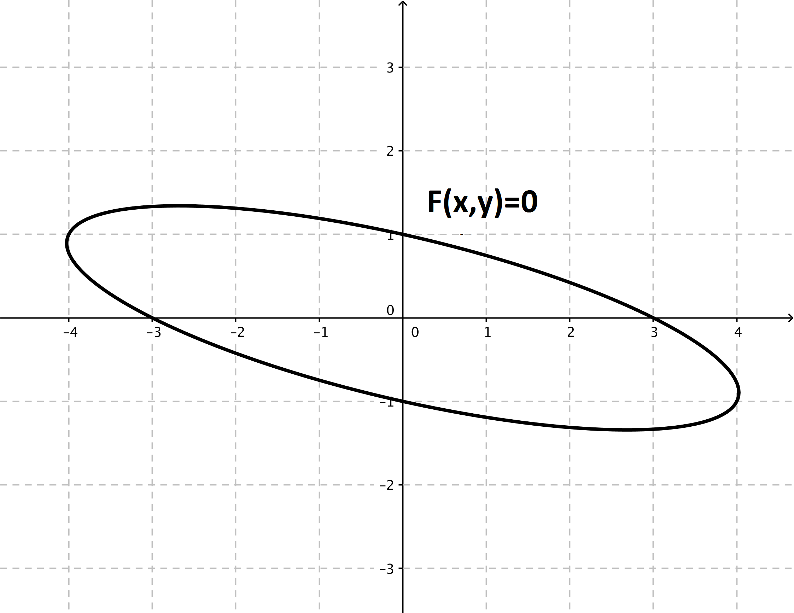
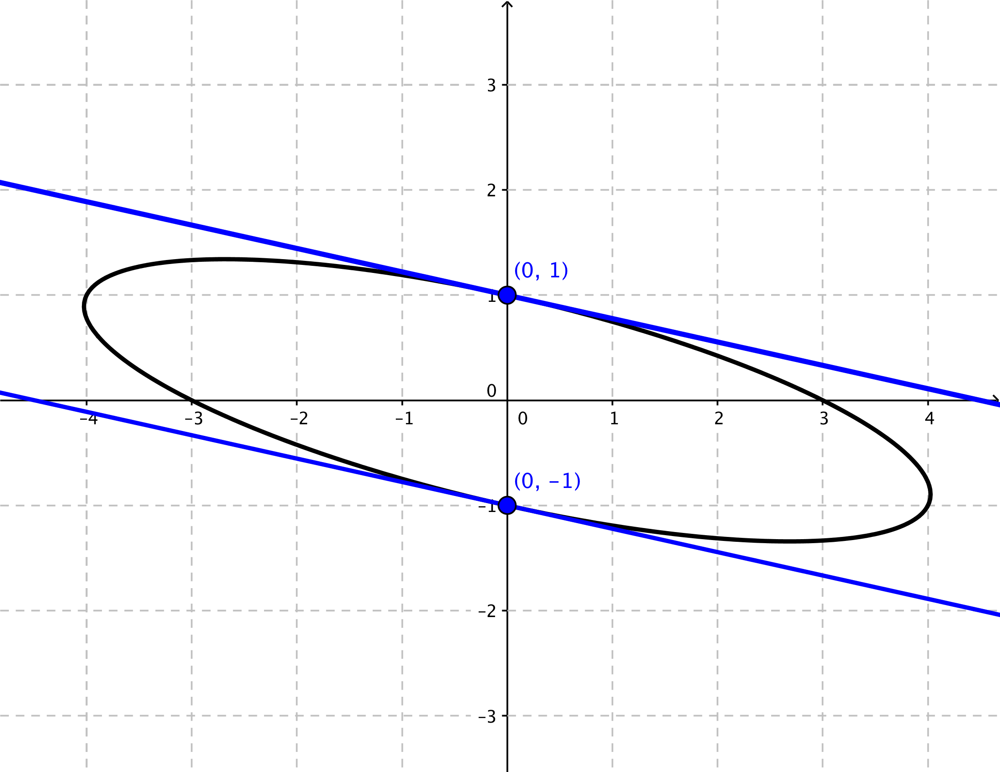
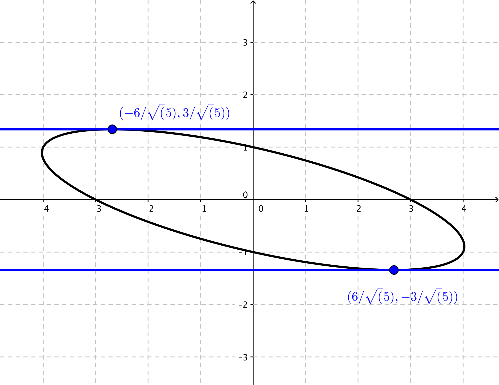

- (a)
- Find \(\dfrac {dy}{dx}\). \[ \dfrac {d}{dx}(x^2 + 4xy + 9y^2) = \dfrac {d}{dx}(9) \]\[ 2x + \left (4y + 4x \dfrac {dy}{dx} \right ) + 18 y \dfrac {dy}{dx} = 0 \]\[ 4x \dfrac {dy}{dx} + 18y \dfrac {dy}{dx} = -2x - 4y \]\[ (4x+18y) \dfrac {dy}{dx} = -2x-4y \]\[ \dfrac {dy}{dx} = \frac {-2x-4y}{4x+18y} \]provided that \(4x+18y \neq 0\).
- (b)
- Find the equation(s) of the tangent line(s) when \(x=0\). Draw the tangent line(s) on
the above picture. Plugging into the original equation, we see that when \(x=0\) we have that\[ 0^2 + 4(0)y + 9y^2 = 9 \qquad \Longrightarrow \qquad y^2 = 1 \qquad \Longrightarrow \qquad y = \pm 1 \]
Then,
\[\eval {\dfrac {dy}{dx}}_{(0,1)} = \frac {-4}{18} = -\frac {2}{9}\]\[\eval {\dfrac {dy}{dx}}_{(0,-1)} = \frac {4}{-18} = -\frac {2}{9} \]So there are two tangent lines to the graph of the given equation when \(x=0\). The two points are \((0,1)\) and \((0,-1)\), and the tangent lines at both points have slope \(-\frac {2}{9}\). Thus, the equations of the two tangent lines are
\[ y - 1 = -\frac {2}{9}(x-0) \qquad \Longrightarrow \qquad y = -\frac {2}{9}x + 1 \]\[ y + 1 = -\frac {2}{9}(x-0) \qquad \Longrightarrow \qquad y = -\frac {2}{9}x - 1 \]
- (c)
- Find the point(s) where the tangent line is horizontal. Draw the point(s) and
line(s) on the above picture. A line is horizontal if and only if its slope is 0. So we are looking for the points \((x_0,y_0)\) such that \(\eval {\dd [y]{x}}_{(x_0,y_0)} = 0\). So we solve:\[ \frac {-2x-4y}{4x+18y} = 0\qquad \Longrightarrow \qquad -2x - 4y = 0 \qquad \Longrightarrow \qquad x=-2y\]
But we also need the point to lie on the the given curve. So, letting \(x=-2y\), we solve:
\[x^2 + 4xy + 9y^2 = 9 \]\[ (-2y)^2 + 4(-2y)y + 9y^2 = 9 \]\[ 4y^2 - 8y^2 + 9y^2 = 9 \]\[ 5y^2 = 9 \]\[ y^2 = \frac {9}{5} \]\[ y = \pm \frac {3}{\sqrt {5}} \]So there exists two solutions to the given equation where the tangent line to the graph has 0 slope. Those two points are \(\left ( -\frac {6}{\sqrt {5}}, \frac {3}{\sqrt {5}} \right )\) and \(\left ( \frac {6}{\sqrt {5}}, - \frac {3}{\sqrt {5}} \right )\).
